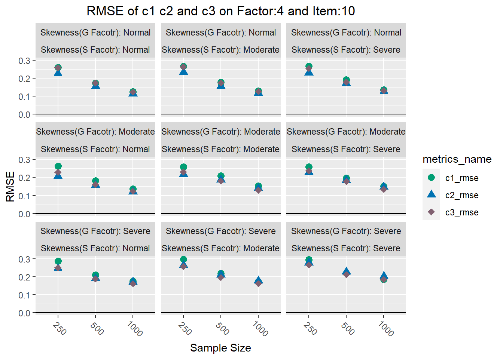

Report of Parameter Estimation of Nonnormal Bifactor Model
Calculate Bias and Rmse
`summarise()` has grouped output by 'Factor', 'I', 'N', 'Fg'. You can override
using the `.groups` argument.Merge all Bias and Rmse into a longer table
Factor I N Fg
Min. :2 Min. : 5.0 250 :810 Skewness(G Facotr): Normal :810
1st Qu.:2 1st Qu.: 5.0 500 :810 Skewness(G Facotr): Moderate:810
Median :3 Median : 7.5 1000:810 Skewness(G Facotr): Severe :810
Mean :3 Mean : 7.5
3rd Qu.:4 3rd Qu.:10.0
Max. :4 Max. :10.0
Fs metrics_name value
Skewness(S Facotr): Normal :810 Length:2430 Min. :-0.43700
Skewness(S Facotr): Moderate:810 Class :character 1st Qu.:-0.00975
Skewness(S Facotr): Severe :810 Mode :character Median : 0.24600
Mean : 0.39166
3rd Qu.: 1.00000
Max. : 1.01200 0. Convergence Rate
table.all.convergence <- read.csv(paste0(result.folder,"convergence.csv"))
convergence.ana <- table.all.convergence %>%
mutate(condition=paste0(Factor,"-",I,"-",N))%>%
group_by(condition)%>%
summarise(con.ratio = sum(mirt..bfconvergence!=0) / n())
ggplot(data = convergence.ana, aes(x = condition, y = con.ratio)) +
geom_col() +
theme(axis.text.x=element_text(angle=-45, vjust=0.4,hjust=1.2),
plot.title = element_text(hjust = 0.5))1. Bias
Bias of a on General Factor and Specific Factor on Factor=4, I=10
Bias of a on General Factor and Specific Factor on 1000 Sample Size
Plot comparison of c1, c2, and c3 on Factor=4, Item=10
2. RMSE
Plot rmse of aG and aS, on Factor:4 and Item:10
RMSE of a on General Factor and Specific Factor on 1000 Sample Size
Plot comparison of rmse of c1, c2, and c3 on Factor=4, Item=10

3. Trends in all conditions
Bias of a in General Factor (Trim Outliers > 3)
[1] 422[1] "Deleted"4. IMPACT of all Factors of Conditions
ANOVA for aG - a of General Factor
Df Sum Sq Mean Sq F value Pr(>F)
Factor 1 0.0177 0.01771 99.0705 8.065e-14 ***
I 1 0.0023 0.00226 12.6392 0.0007946 ***
N 2 0.1436 0.07182 401.7764 < 2.2e-16 ***
Fg 2 5.4722 2.73612 15305.9156 < 2.2e-16 ***
Factor:I 1 0.0052 0.00522 29.2133 1.504e-06 ***
Factor:N 2 0.0041 0.00203 11.3635 7.604e-05 ***
I:N 2 0.0251 0.01254 70.1673 9.633e-16 ***
Factor:Fg 2 0.0353 0.01766 98.7922 < 2.2e-16 ***
I:Fg 2 0.0678 0.03391 189.6965 < 2.2e-16 ***
N:Fg 4 0.0026 0.00065 3.6264 0.0108944 *
Factor:I:N 2 0.0016 0.00078 4.3531 0.0176700 *
NA
---
Signif. codes: 0 '***' 0.001 '**' 0.01 '*' 0.05 '.' 0.1 ' ' 1ANOVA for aS - a of Specific Factor
Df Sum Sq Mean Sq F value Pr(>F)
Factor 1 0.002513 0.002513 27.9366 2.313e-06 ***
I 1 0.044634 0.044634 496.1214 < 2.2e-16 ***
N 2 0.041800 0.020900 232.3116 < 2.2e-16 ***
Fg 2 0.003515 0.001757 19.5334 4.142e-07 ***
Fs 2 0.165061 0.082531 917.3531 < 2.2e-16 ***
I:N 2 0.023936 0.011968 133.0280 < 2.2e-16 ***
Fg:Fs 4 0.005473 0.001368 15.2085 2.175e-08 ***
I:Fg:Fs 4 0.001322 0.000331 3.6749 0.01018 *
NA
---
Signif. codes: 0 '***' 0.001 '**' 0.01 '*' 0.05 '.' 0.1 ' ' 1ANOVA for c1
Df Sum Sq Mean Sq F value Pr(>F)
Factor 1 0.02445 0.024450 129.3220 5.945e-16 ***
I 1 0.11435 0.114348 604.8098 < 2.2e-16 ***
N 2 0.07274 0.036368 192.3548 < 2.2e-16 ***
Fg 2 0.43334 0.216669 1146.0039 < 2.2e-16 ***
Fs 2 0.02203 0.011017 58.2705 3.275e-14 ***
Factor:I 1 0.00383 0.003828 20.2482 3.658e-05 ***
Factor:N 2 0.00199 0.000995 5.2622 0.008167 **
I:N 2 0.01488 0.007440 39.3530 2.861e-11 ***
Factor:Fg 2 0.00653 0.003264 17.2628 1.599e-06 ***
I:Fg 2 0.00938 0.004692 24.8157 2.272e-08 ***
Factor:N:Fs 4 0.00205 0.000513 2.7157 0.039160 *
NA
---
Signif. codes: 0 '***' 0.001 '**' 0.01 '*' 0.05 '.' 0.1 ' ' 1ANOVA for c2
Df Sum Sq Mean Sq F value Pr(>F)
Factor 1 0.01088 0.01088 103.4138 3.763e-14 ***
I 1 0.03368 0.03368 320.1652 < 2.2e-16 ***
Fg 2 0.71217 0.35608 3384.5079 < 2.2e-16 ***
Fs 2 0.06300 0.03150 299.3932 < 2.2e-16 ***
Factor:I 1 0.00042 0.00042 4.0304 0.049703 *
Factor:Fg 2 0.01004 0.00502 47.6947 1.169e-12 ***
I:Fg 2 0.02129 0.01065 101.1856 < 2.2e-16 ***
Fg:Fs 4 0.00150 0.00037 3.5631 0.011898 *
Factor:N:Fs 4 0.00175 0.00044 4.1561 0.005242 **
NA
---
Signif. codes: 0 '***' 0.001 '**' 0.01 '*' 0.05 '.' 0.1 ' ' 1ANOVA for c3
Df Sum Sq Mean Sq F value Pr(>F)
I 1 0.00442 0.004418 39.6003 5.763e-08 ***
N 2 0.06620 0.033102 296.7055 < 2.2e-16 ***
Fg 2 0.50998 0.254988 2285.5630 < 2.2e-16 ***
Fs 2 0.02816 0.014080 126.2051 < 2.2e-16 ***
Factor:I 1 0.00100 0.001002 8.9834 0.0041106 **
Factor:N 2 0.00178 0.000891 7.9822 0.0009183 ***
I:N 2 0.01686 0.008431 75.5719 2.234e-16 ***
Factor:Fg 2 0.00534 0.002669 23.9196 3.639e-08 ***
I:Fg 2 0.01209 0.006046 54.1959 1.229e-13 ***
NA
---
Signif. codes: 0 '***' 0.001 '**' 0.01 '*' 0.05 '.' 0.1 ' ' 1